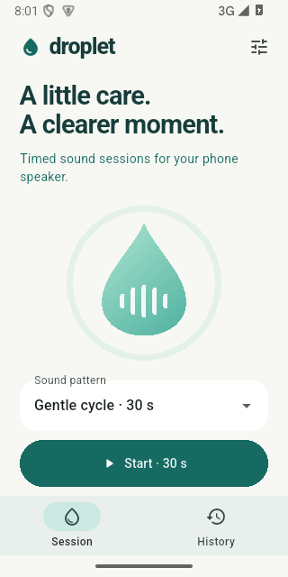

PRAXIS SCIENCE LAB / ANDROID
Droplet — Speaker Care
Timed speaker tones, adjustable frequency and a quick sound comparison.
In testing Not yet available on Google Play.
Try timed sound sessions designed to explore whether speaker vibrations help dislodge residual water near the speaker opening. Choose a gentle 30-second cycle, 60-second pulses or a 90-second frequency sweep. A manual mode offers 80–300 Hz tones for 30 seconds.
Follow progress on a countdown, stop at any time and compare the sound with a short five-second tone. Completed sessions and your own better-or-unchanged assessment are saved locally. The app does not detect moisture or objectively measure improvement.
Playback uses the built-in speaker, checks for external audio devices and stops when the app leaves the foreground or loses audio focus. English, Romanian and Spanish are available. No account is required.
Water-removal effectiveness has not been validated on physical phones and is not guaranteed. Droplet does not repair damaged speakers, remove internal moisture or boost the phone beyond its normal volume. Advertising is planned; it is disabled in the current development build.
Inside the app
Actual screenshots from version 0.1.0 (1).

Language
English by default; Romanian and Spanish available in Settings
Using the app
Follow the phone manufacturer’s guidance after liquid exposure. If immersed, turn the phone off and allow it to dry as instructed before using sound. Keep the speaker opening unobstructed, disconnect headphones and external audio devices, and use moderate volume away from your ears. Do not intentionally wet a device for testing. Stop if the sound is uncomfortable or distorted.
Praxis Science Lab is the publishing brand used by Traian Anghel. For support or privacy questions, email traiananghel@gmail.com. Include the app name and version. Do not send passwords, medical records, private recordings or other sensitive information.